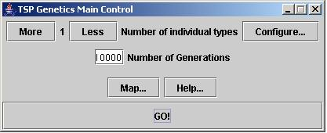
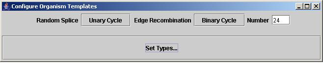
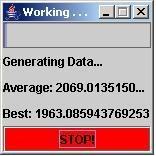
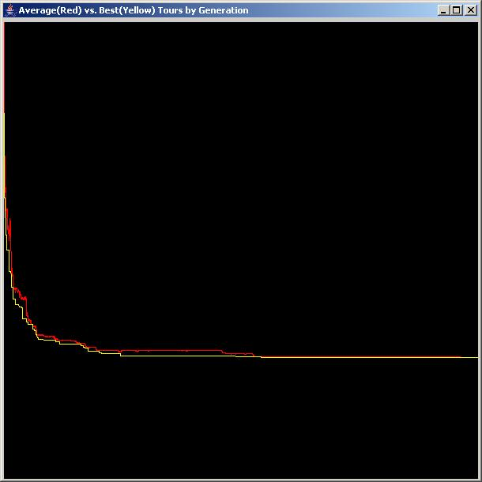
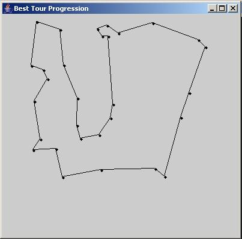

I apologize in advance for the awkward interface and default values. I wrote this to step you through the most basic operations of the program, but I have not changed anything since it was originally written. At the end of this document I briefly discuss the various problems with the program from the initial design to the final user experience.
The first thing you need to do is rename 'tspGenetics.ba' to 'tspGenetics.bat'. If you are not on a windows system, you can run it from the command line:
java -cp tspGenetics.jar MainClass
On a windows system with Java installed, double clicking the
tspGenetics.bat file should start the program, opening the main window
(mainScreen.jpg):

On my system this works with Java 1.4, but was initially written for
Java 1.2.
Enter '10000' in the 'Number of Generations' box.
Clicking the 'help' button will open a new window containing a text
file with a brief background of the problem and some of the underlying
theory. The 'map' button will give a few simple options relating to the
number of cities and the size (in pixels) of the map. The default is 30
cities, which has somewhere near 2.6525285981219105863630848e+32
possible solutions (according to my handy calculator), which is a
fairly large problem area. Unfortunately, there is no mathematical
formula to determine the optimal path through the cities. This
program uses genetic algorithms to determine which path is the best.
Click 'configure'. The following window should appear (configure.jpg):

Click the 'Unary Cycle' button until 'Random Splice' appears (I know,
its awkward), and then click 'Binary Cycle' until 'Edge Recombination'
appears. Click 'Set Types'. Note that the window will NOT close.
In the main control panel, click 'GO!', the following window will
appear (progress.jpg):

This is the main loop of the program. The progress bar displays the
percentage of the total generations that have been processed. The
underlying mechanics are beyond the scope of this document. It is not
necessary to let the process run completely, but the longer it runs,
the better the result. The Unary and Binary algorithms selected earlier
make an effective combination, and in my own runs, they almost always
provide the optimal solution within 10,000 generations (meaning less
than 2.4e+5 calculations, vs 2.6e+32 calculations required by brute
force). The tour lengths are measured with a simple Euclidean metric,
and represent the number of units (pixels) required to draw that tour.
The lower the number the better the result.
The numbers are the average and best solutions for that generation
Regardless of whether the loop reaches the end, or the user hits the
stop button, the following two windows will be opened (comparison.jpg
and bestTour.jpg):


The first window is a (unfortunately unlabeled) graph of the lengths of
the tours over each generation. When the algorithms used are effective,
the graph should be similar to this, and the average and best tours
should be tied closely together. Ineffective combinations will result
in either constant or random graphs. Generally, the upper bound on
these settings is around 5000 and the ideal is usually around 1200.
The second window will display a brief animation of the best tour
through each generation. The best solution should trace an outline
around the cities and should not have any crossed lines. There is
currently no way to replay this animation. It might also be necessary
to resize the window to view the map properly.
There are many algorithms and options that can be used, and despite the
rough user interface, this program gives a visual comparison of several
common types of genetic algorithms, and often subtle changes can
produce dramatically different results.
The code itself is in the tspGeneticsSource folder.
Please keep in mind that this code has been untouched for nearly five years, and there are quite a few details that I would do
differently now:
- Replace 'Your Product Name' in the comments with TSPGenetics.
- Clean up the user interface (obviously, drop down boxes should be
used instead of buttons, I still don't know why I did that).
- Display the map and make it editable.
- Add a button to replay the animation
- Display the best tour progression as the data is generated instead
of afterwards.
- Add labels and values to the graph.
- The animation window size should be properly set.
Additionally, there are a few extra features in the original design
that never made the final cut, and they can be found in the
'surgicallyRemoved' sub folder.
Beyond this, there are a few serious code/design problems as well, the
following should be changed:
- The program should be deployed with a platform-independent executeable JAR.
- All of the code is currently in the default package. It should be in
its own package.
- Similarly, functional groups should be placed into appropriate sub
packages, for example, the binary and unary operators should be in
separate folders -- during development, I used main() functions to test
each class. While effective, it makes maintenance confusing. Now, I
would use JUnit and create separate unit testing classes according to
the test first methodology.
- The headers and comments are not Javadoc compliant. They were
generated from a template by an early version of JBuilder. The
flexibility of Java makes it easy to write self-documenting code, and
compliance with Sun's standards make it easy to create and maintain API
documentation.
- Much of the design was ad-hoc. While I had a clear idea of the
program, and developed it through top down decomposition, I worked many
complicated and unnecessary features in the beginning, which were
ultimately removed, but cost me time which would have helped smooth
the interface problems.
The final project included a project notebook containing all of my
research and design notes, which included much more information about
the mathematics behind the algorithms and comparisons of internal
representations, as well as various other pieces of background image.
This notebook is (hopefully) in the computer science department
library at the University of Redlands, and was intended to be this
programs accompanying documentation, which is why the documents here
were so sparse (and necessitating this document).
Finally, I would like to note a few of the actual implementation
details:
The map loading and saving used Java's Serializable interface; the GUI
is done with Java's swing lightweight component library; and the graph
and animation windows are independent threads created by implementing
the Runnable interface.
Again, I apologize for the delay in sending this, but in reviewing the
layout, there were many glaring issues that I feel would create
unnecessary doubts of my competence based on mistakes made several
years ago. I hope you can overlook these issues as you examine the
code, as my methodologies have grown considerably.
Thanks for your patience,
Liam Christopher.